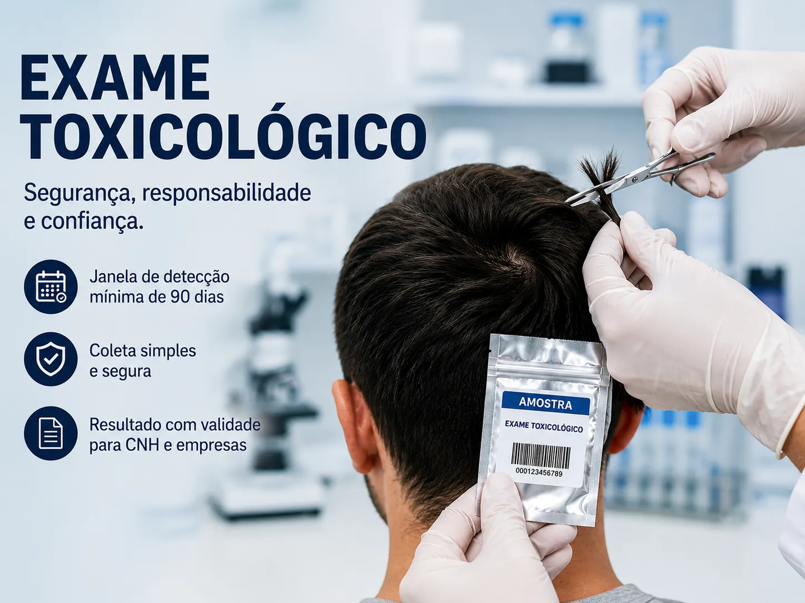

Novembro Azul: exames e cuidados com a saúde do homem
Veja quais exames podem ser avaliados em uma consulta e entenda a orientação oficial sobre PSA, próstata e rastreamento.
Leia maisDicas de saúde, informações sobre exames laboratoriais, clínica médica e novidades para você e sua família em Nova Granada - SP.
Veja quais exames podem ser avaliados em uma consulta e entenda a orientação oficial sobre PSA, próstata e rastreamento.
Leia mais
Entenda quais exames podem exigir jejum, quais geralmente podem ser coletados sem ele e como confirmar o preparo antes da coleta em Nova Granada-SP.
Leia mais
Veja como fazer o exame admissional em Nova Granada-SP na Cruz de Prata: etapas, documentos, prazos e agendamento para admitir seus funcionários com segurança.
Leia maisAgende consulta com clínico geral em Nova Granada-SP na Cruz de Prata. Atendimento para sintomas, check-up, renovação de receitas e encaminhamentos.
Leia mais
Encontre o melhor laboratório para fazer seu exame toxicológico em Nova Granada-SP. Atendimento rápido para CNH, concursos e empresas.
Leia mais
Saiba como funciona o exame de DNA na gravidez, quando pode ser realizado, os métodos disponíveis, a segurança do procedimento e as principais dúvidas sobre o teste de paternidade gestacional.
Leia maisConheça os principais serviços da Cruz de Prata: exames laboratoriais, clínica médica, medicina do trabalho e exame toxicológico em Nova Granada - SP.
Leia mais